La règle qui te coûte le plus
Edgio identifie, parmi tes règles personnelles, celle dont le non-respect pèse le plus lourd sur tes séances — et chiffre l'écart.
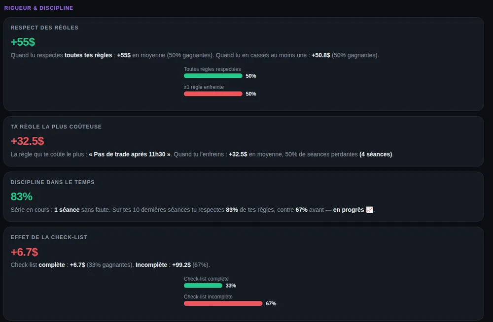
Ton P&L, ton winrate, ton R moyen sont des conséquences. La cause, c'est ton état : ta discipline, ta rigueur, ton humeur, le respect de ton plan. Edgio est le journal de trading qui note d'abord l'humain — puis croise ces notes avec tes résultats.
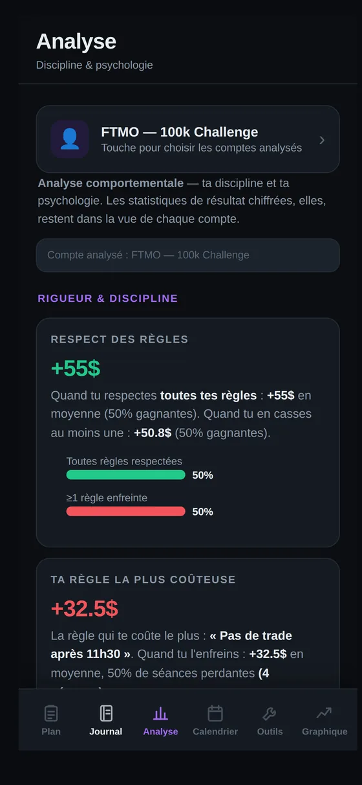
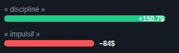
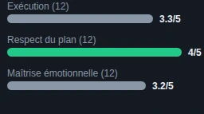
Un journal de trading qui ne collecte que des statistiques décrit un symptôme. Il te dit que tu as perdu. Il ne te dit jamais pourquoi.
Les journaux déjà intégrés à ton broker, comme la plupart des trackers de performance, affichent toutes les données chiffrées imaginables : P&L, winrate, R moyen, drawdown, expectancy. Ces chiffres sont exacts — et ils n'expliquent rien. Tant que le trader ne s'auto-évalue pas, aucune de ces courbes ne change son comportement en séance.
Edgio part de l'autre bout. Avant de compter tes gains, tu notes ton état : ta discipline d'exécution, ton respect du plan, ta maîtrise émotionnelle, ton humeur avant et après la séance, et si oui ou non tu as tenu chacune des règles que tu t'es fixées. C'est ce que veut dire un journal de trading orienté psychologie et émotion : la donnée d'entrée, c'est l'humain.
Ensuite seulement, l'application fait le travail que personne ne fait à ta place : elle croise tes notes comportementales avec tes résultats chiffrés. C'est ça, l'analyse comportementale du trading — voir en face l'écart de résultat entre tes séances disciplinées et tes séances impulsives, savoir quelle règle te coûte le plus cher quand tu l'enfreins, et identifier l'axe sur lequel tu as le plus à gagner avant même de changer de stratégie.
Tu ne corriges pas une courbe. Tu corriges un comportement — et la courbe suit.
Ton plan de trading et tes règles personnelles restent sous les yeux. Une check-list de préséance personnalisable cadre ta routine : biais du jour, niveaux tracés, calendrier éco vérifié. Ce que tu t'engages à tenir est défini avant l'ouverture, pas improvisé en séance.
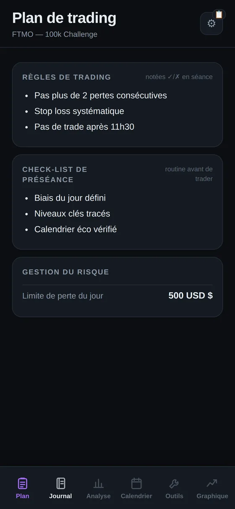
Séance après séance, tu coches les règles tenues et celles enfreintes, tu poses ton humeur avant et après, et tu t'auto-évalues sur trois axes comportementaux : exécution, respect du plan, maîtrise émotionnelle. Le journal de fin de séance accueille tes notes libres — un assistant d'écriture IA t'aide à formuler ce que tu as vécu.
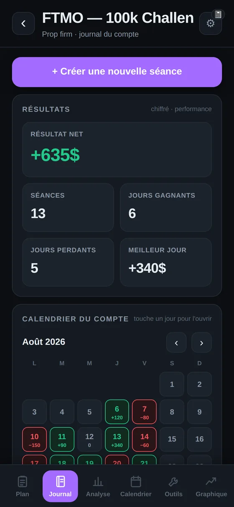
La page Analyse met tes notes comportementales en face de tes résultats. Ce que ça donne concrètement : la règle qui te coûte le plus cher quand tu l'enfreins, l'écart de résultat entre check-list complète et incomplète, l'effet de ton humeur, et l'axe sur lequel tu as le plus à gagner.
Ton broker te donne un symptôme.
Edgio te donne la cause.
La page où la promesse devient concrète : ta discipline et ta psychologie, mises en face de tes résultats chiffrés.
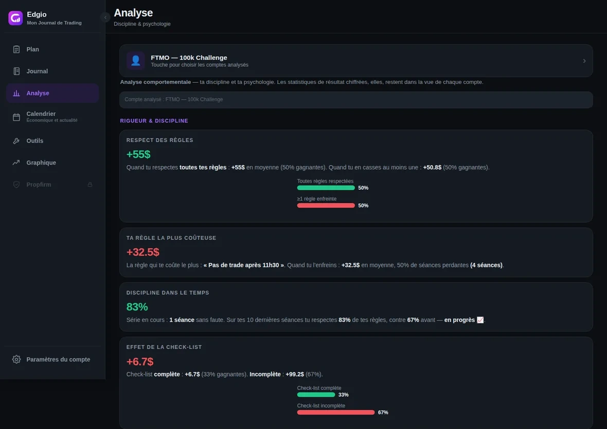
Edgio identifie, parmi tes règles personnelles, celle dont le non-respect pèse le plus lourd sur tes séances — et chiffre l'écart.

Ton résultat comparé selon ton humeur avant la séance et selon les tags que tu poses (« discipliné », « impulsif »). L'émotion cesse d'être un ressenti flou : elle devient une donnée.
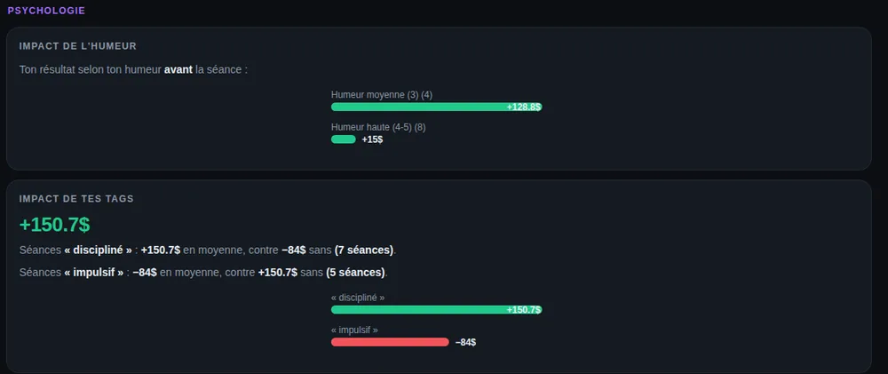
Sur les trois axes que tu notes toi-même — exécution, respect du plan, maîtrise émotionnelle — Edgio désigne celui qui reçoit tes notes les plus basses. C'est là que tu as le plus à gagner, avant même de changer de stratégie.
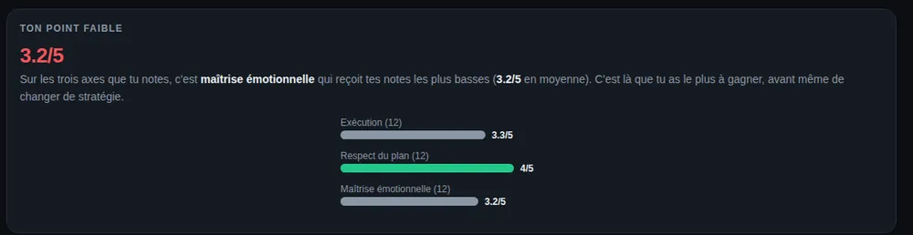
Tout ce qui alimente l'analyse comportementale — et rien qui ne serve pas à comprendre ce qui cause ta performance.
Après chaque séance, tu écris ce que tu as vécu en notes libres. Un assistant d'écriture par IA t'aide à formuler ce que tu n'arrives pas à mettre en mots — parce qu'un journal qu'on ne remplit pas ne sert à rien.
Tu te notes sur trois axes comportementaux — discipline d'exécution, respect du plan, maîtrise émotionnelle. Pas sur ton résultat : sur la façon dont tu as trader.
Ton humeur avant et après la séance. Deux gestes qui suffisent à faire émerger, sur la durée, la corrélation entre ton état d'esprit et tes résultats.
Tu définis tes propres règles de trading — « pas plus de 2 pertes consécutives », « stop loss systématique », « pas de trade après 11h30 » — et tu coches, séance après séance, si elles ont été respectées.
Ta routine avant de trader, personnalisable. Edgio mesure ensuite l'écart de résultat entre les séances où tu l'as complétée et celles où tu l'as expédiée.
Associe chaque séance à un setup et suis les statistiques propres à chacun. La réponse à la seule question qui compte : lequel de mes setups mérite encore ma place en séance ?
Le croisement. Tes notes de discipline et de psychologie confrontées à tes résultats chiffrés, pour faire ressortir ton point faible et la règle qui te coûte le plus. Voir la page Analyse →
Day trading, swing, futures, forex : Edgio s'adapte à ta façon de trader, pas l'inverse. Objectifs du jour en texte libre, check-list personnalisable, règles que tu écris toi-même — rien n'est figé dans un format unique.
Quand une séance compte 10, 20 ou 30 trades, s'arrêter pour rédiger après chacun casse le rythme. Edgio propose une grille de notation ultra-rapide : un tap pour marquer un trade gagnant ou perdant, un compteur de progression et un ratio gagnants/perdants qui se mettent à jour en direct. De quoi garder le contrôle et savoir exactement où tu en es, séance après séance, sans jamais lâcher ton écran de trading.
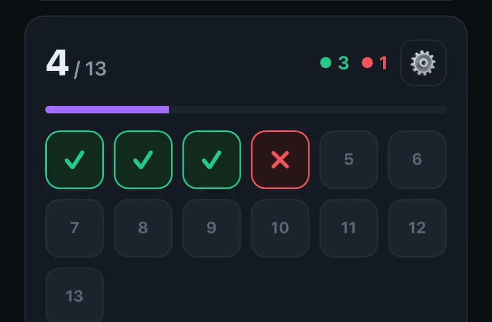
Et pour tout le reste : les objectifs du jour s'écrivent en texte libre, la check-list de préséance se compose entièrement à ta main, et tes règles personnelles reflètent ta propre stratégie. Edgio est ultra-personnalisable — à toi de le façonner à ton trading, pas l'inverse.
Et une boîte à outils, en passant : tout ce qu'on garde ouvert dans un autre onglet est déjà dans l'app.
La boîte à outils d'Edgio réunit une fiche contrat détaillant les spécifications d'un instrument, un minuteur de séance, les horloges des places boursières mondiales (Sydney, Tokyo, Londres, New York) et des calculatrices de trading (taille de position, valeur du point).
Le reste de ce qu'un journal de trading doit faire — proprement, sans en faire un argument.
Compte réel, challenge prop firm, démo : chaque compte a son propre journal, son calendrier et ses statistiques, avec une vue cumulée tous comptes. Sur ordinateur, le tableau de bord se personnalise — tu ajoutes, déplaces et redimensionnes les widgets (comptes, calendrier cumulé, sessions de marché…).
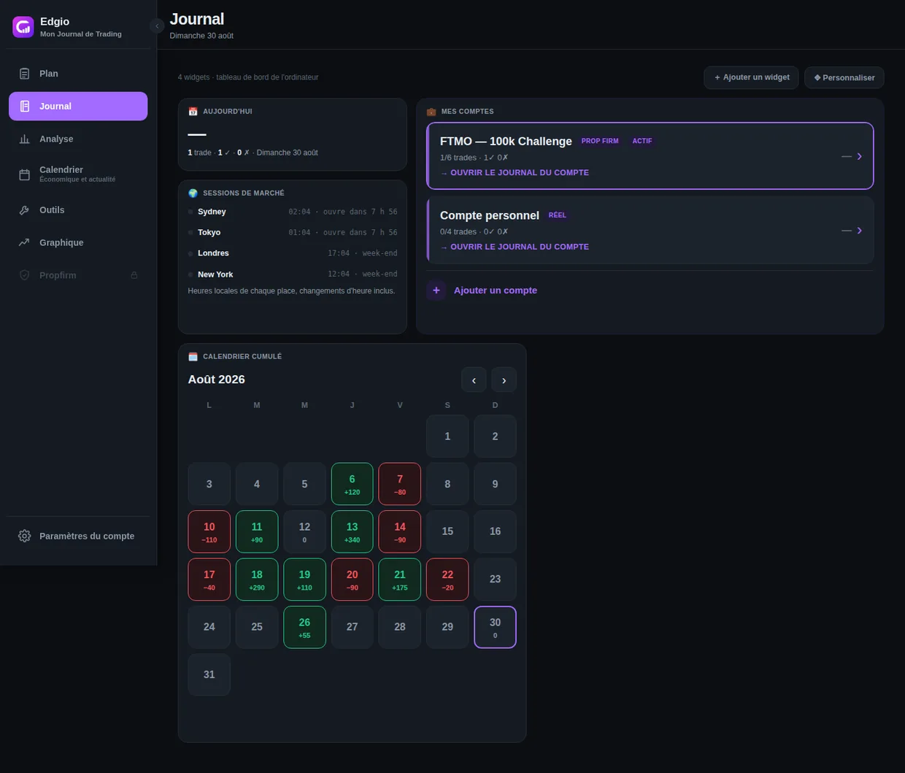
Par compte et en cumulé, avec un code couleur gagnant / perdant jour par jour. Un mois de séances se lit d'un coup d'œil : les jours verts, les jours rouges, les jours où tu n'as pas trader.
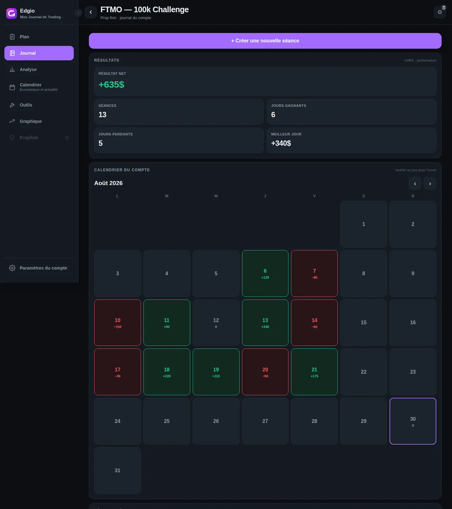
Un espace dédié pour écrire ta stratégie et garder tes règles sous les yeux : règles de trading notées en séance, check-list de préséance, gestion du risque.
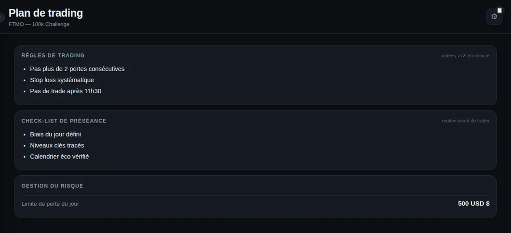
Le calendrier macro des données à impact et un fil d'actualités marché, intégrés à l'app. De quoi préparer ta séance sans changer d'onglet.
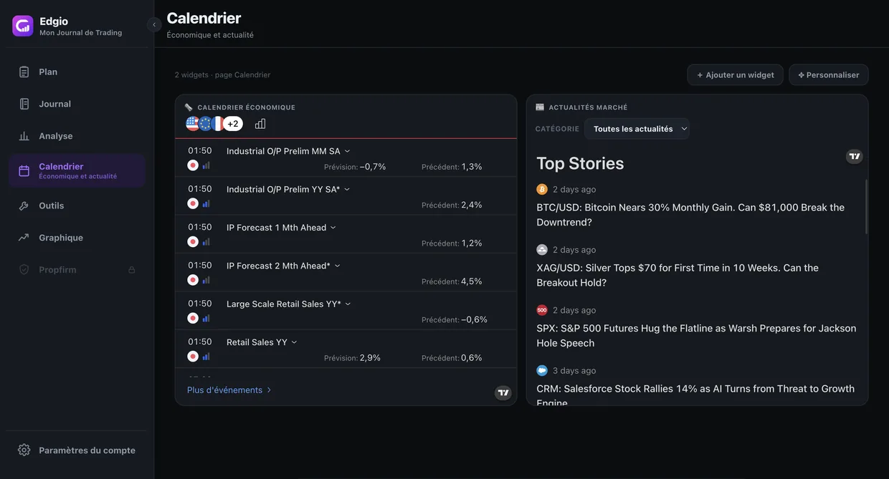
Un chart de trading directement dans l'app, pour annoter une séance ou revoir un setup sans quitter ton journal.
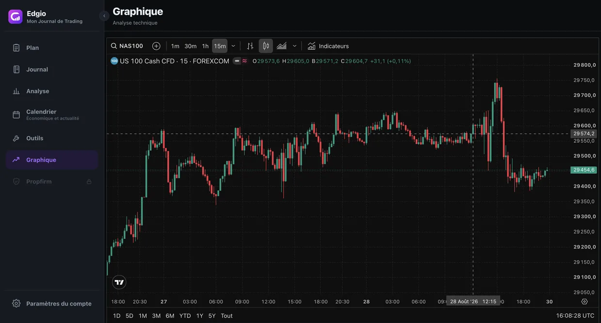
Fiche contrat détaillant les spécifications d'un instrument, minuteur de séance, horloges des places boursières mondiales (Sydney, Tokyo, Londres, New York) et calculatrices de trading — taille de position, valeur du point. Tout ce qu'on garde d'habitude ouvert dans dix onglets différents, réuni dans l'app.
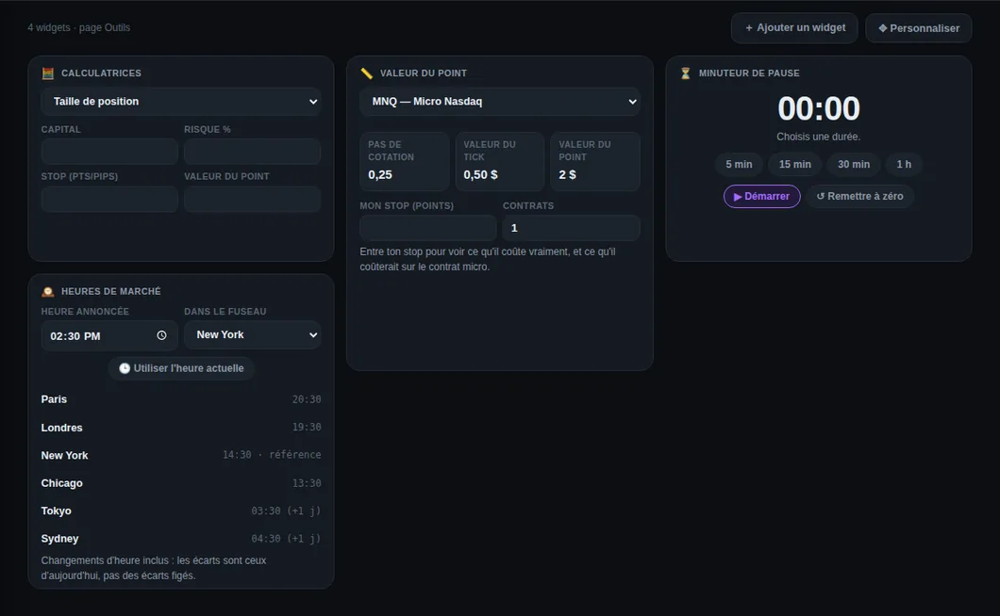
Une seule app, deux usages : tu notes ta séance sur mobile, tu analyses au calme sur grand écran.
Utilisable sur ordinateur, avec une interface qui s'adapte : barre de navigation en bas sur mobile, sidebar complète sur grand écran, tableau de bord à widgets sur la version ordinateur.
Installable sur ton écran d'accueil, iOS et Android, directement depuis le navigateur — pas de store, pas de téléchargement. Ouvre app.edgio.fr, ajoute-la à l'écran d'accueil, et tu obtiens une expérience plein écran.
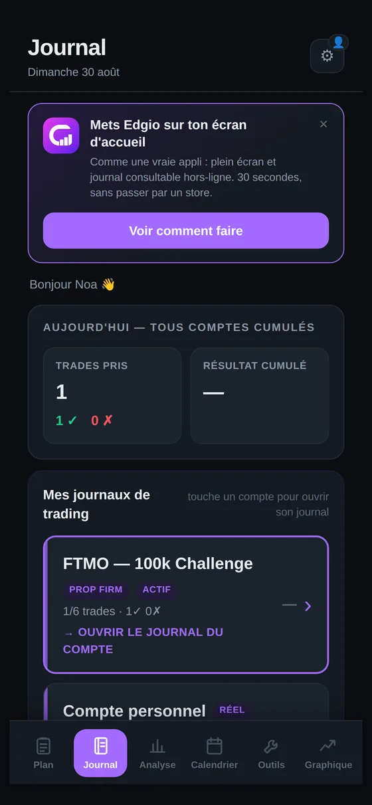
Edgio est un produit vivant. Voici ce qui est en chantier — annoncé pour ce que c'est, pas vendu comme déjà fait.
Un briefing pré-séance pensé spécifiquement pour les challenges de prop firm. La page existe déjà dans l'application, mais elle est verrouillée : ce n'est pas encore une fonctionnalité disponible.
De nouvelles fonctionnalités arrivent régulièrement. On préfère ne pas te promettre une liste : tu les verras apparaître dans l'app, et on ne les annoncera ici qu'une fois livrées.
Crée ton compte et commence à noter ta discipline, ton humeur et tes règles dès ta prochaine séance.
Commencer gratuitementSans carte bancaire · Tes données restent les tiennes
Un journal classique enregistre des chiffres : P&L, winrate, R moyen. Edgio part de l'autre bout : tu notes d'abord le trader — discipline d'exécution, respect du plan, maîtrise émotionnelle, humeur avant et après séance, règles personnelles respectées ou non — et l'application croise ensuite ces notes avec tes résultats pour montrer ce qui influence réellement ta performance. Les chiffres restent là ; ils cessent juste d'être le seul contenu du journal.
C'est la page Analyse. Elle met en face tes notes de discipline et de psychologie et tes résultats chiffrés, et en sort des constats concrets : l'écart de résultat entre les séances où tu respectes toutes tes règles et celles où tu en casses au moins une, la règle qui te coûte le plus cher quand tu l'enfreins, l'effet de ta check-list, l'impact de ton humeur et de tes tags, et ton point faible parmi les trois axes que tu notes.
C'est le principe — mais Edgio le rend court. Cocher tes règles, poser ton humeur et te noter sur trois axes prend quelques secondes. Pour les notes libres, un assistant d'écriture par IA t'aide à formuler ce que tu as vécu quand tu bloques sur la page blanche. Un journal qu'on ne remplit pas ne sert à rien : tout est pensé pour que tu le remplisses.
Oui. Compte réel, challenge prop firm, démo : chaque compte a son propre journal, calendrier et statistiques, et une vue cumulée tous comptes regroupe l'ensemble. Sur ordinateur, tu composes ton tableau de bord en ajoutant, déplaçant et redimensionnant des widgets.
Edgio est une application web installable en PWA : rien à télécharger sur l'App Store ou le Play Store. Sur iPhone, ouvre app.edgio.fr dans Safari, touche Partager puis « Sur l'écran d'accueil ». Sur Android (Chrome), ouvre app.edgio.fr et touche « Installer l'application ». L'icône apparaît sur ton écran d'accueil et l'app s'ouvre en plein écran.
Pas encore. Le module Prop Firm — un briefing pré-séance pensé spécifiquement pour les challenges de prop firm — est visible dans l'application mais verrouillé. C'est une fonctionnalité à venir, pas une fonctionnalité livrée. Tu peux en attendant suivre ton challenge comme un compte à part entière, avec son journal, son plan et ses règles.
Oui, tu peux commencer gratuitement, sans carte bancaire. Une offre premium débloque en plus l'analyse comportementale et les autres fonctionnalités avancées.
Chaque utilisateur n'accède qu'à ses propres données et les échanges sont chiffrés (HTTPS). Edgio ne se connecte pas à ton broker et ne voit jamais ton argent. Détails dans notre politique de confidentialité.
Non. Edgio est un outil de journal, d'auto-évaluation et d'analyse comportementale, pas un conseiller en investissement. Aucun signal, aucune promesse de gain. Le trading comporte un risque de perte en capital ; tes décisions restent les tiennes.
Note ta discipline, ton plan et tes émotions séance après séance — et laisse Edgio te montrer ce qui cause vraiment tes résultats. Commence gratuitement, sans carte bancaire.